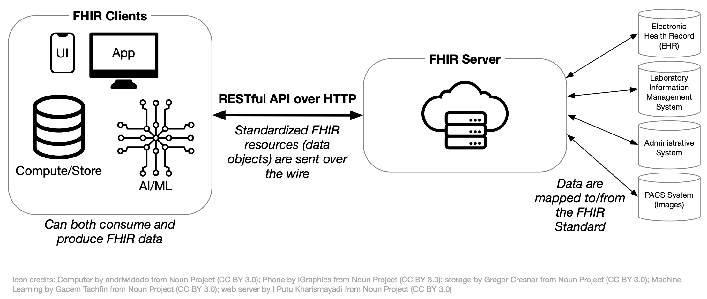

FHIR from 1,000 Feet
-
Summarize the role of resources in FHIR.
Resources are categories of data in FHIR, and are used to store and retrieve a specific type of data in a pre-defined structure.
-
Describe how FHIR can be customized and why it is important.
FHIR can be customized through a process called profiling, where FHIR resources are constrained and extended. This allows FHIR to be used for a wide variety of use cases, including applications that were not imagined by FHIR’s creators.
-
Explain the purpose of the FHIR API.
The FHIR API is a standard way for systems to request and send instances of resources to each other.
This is part two of our introduction to FHIR for research. Read part one, FHIR from 10,000 Feet, if you haven’t already.
This module looks at how FHIR works from a technical standpoint, and is targeted to those interested in leading or implementing research using FHIR.
1 The structure of FHIR
The FHIR specification groups data elements into “resources,” like Patient for representing demographics and administrative information about an individual, and Observation for representing measurements and assertions about a patient or other subject.
FHIR implementers can constrain what information gets included in a FHIR resource or use FHIR extensions to add information to a resource. They can also specify which FHIR resources should be used together for their use case. They share these constraints, extensions, and combinations with others through an Implementation Guide (IG).
Below is a screenshot of the Patient resource from the FHIR specification (R5 version):
{kind=link}
All FHIR resources have a Resource Content table.1 The table shows the hierarchy of elements in the FHIR resource. Elements might be one level deep (like Patient.birthDate) or nested (like Patient.contact.name).
Each element has properties that appear in the Flag, Card. (short for “Cardinality”), and Type columns. The details of these properties are beyond the scope of this module; see Key FHIR Resources for more information.
Elements also have short descriptions (Description & Constraints) as well as longer descriptions. To see the longer description, click on the element’s name (e.g., see the details of Patient.gender).
When a FHIR resource is created and populated with data, we call this an instance of the FHIR resource. An instance of the Patient resource would assign Patient.name to a value like Andy Smith. Instances are formatted in JSON or XML. To see an example of a patient instance formatted as JSON, expand the box below.
Patient instance example
Below is an example of a what a FHIR resource instance looks like in JSON format.
{
"resourceType": "Patient",
"id": "f001",
"text": {
"status": "generated",
"div": "..."
},
"identifier": [
{
"use": "usual",
"system": "urn:oid:2.16.840.1.113883.2.4.6.3",
"value": "738472983"
},
{
"use": "usual",
"system": "urn:oid:2.16.840.1.113883.2.4.6.3"
}
],
"active": true,
"name": [
{
"use": "usual",
"family": "van de Heuvel",
"given": [
"Pieter"
],
"suffix": [
"MSc"
]
}
],
"gender": "male",
"birthDate": "1944-11-17",
"deceasedBoolean": false,
"managingOrganization": {
"reference": "Organization/f001",
"display": "Burgers University Medical Centre"
}
}2 Customizing FHIR
The FHIR specification follows the 80/20 rule to determine which data elements are included in a resource: data elements are typically included only if 80% of relevant systems will use them. Less common data needs are handled through FHIR extensions (discussed below). This means that FHIR-enabled systems will implement most common data elements consistently.
To maximize usability, data elements contained in FHIR resources have minimal constraints. Constraints restrict how a data element can be populated. For example, a constraint on Patient resource might require that Patient.birthDate be populated. However, some systems record a patient’s age in years rather than date of birth for privacy reasons. If the constraint on Patient.birthDate existed, those system would not be able to use the Patient resource.
However, some use cases may require Patient.birthDate be populated. To achieve this, implementers can define use case-specific constraints on top of the base FHIR specification through profiling. The output of profiling is an Implementation Guide (IG), which is a collection of profiles that build on top of the FHIR specification (or other IGs).
2.1 Example: customizing Patient in US Core
The US Core FHIR IG (referred to as “US Core” below) defines a FHIR implementation for USCDI, and is widely used in the US as the basis for FHIR implementations. In other words, EHRs in the US that support FHIR are likely also conformant with US Core.
US Core defines a profile of Patient, which does two things:
- Adds constraints: For example, the Patient resource in base FHIR does not require that the
nameelement is populated. US Core’s profile of Patient adds a constraint to makenamerequired.2 - Adds extensions: The base Patient resource in FHIR does not provide a way to capture patient race and ethnicity, which are common data elements in US health data. US Core adds
Patient.us-core-raceandPatient.us-core-ethnicityextensions to provide a consistent, interoperable way to store these data.
Many other FHIR IGs include profiles that are based on US Core rather than directly on FHIR resources. For example, the mCODE IG, which defines a core set of data elements for oncology EHR data, includes a CancerPatient profile that is based on US Core’s Patient profile. Because US Core is widely implemented in US-based EHRs, it is helpful to base US-centric IGs off of US Core.
2.2 Example: post-acute care data
The PACIO Project is a post-acute care interoperability project that publishes a FHIR IG to support exchange of relevant data.3
The following table shows how PACIO represents a narrative history of a patient’s functional status4 in their IG:
| FHIR term | PACIO’s approach using FHIR | Commentary |
|---|---|---|
| Resource | Functional status data are represented with the Observation FHIR resource. | “Observations are a central element in healthcare, used to support diagnosis, monitor progress, determine baselines and patterns…”5 |
| Profile | PACIO provides a Narrative History of Functional Status profile of the Observation resource. | Adds constraints like:
|
| Extension | Two extensions are defined by this profile:
|
The base Observation resource does not have a mechanism for capturing these types of data. |
In general, a concept like “narrative history of a patient’s functional status” will be represented by one or more profiles of FHIR resources in a FHRI IG, each with a set of relevant constraints and (if necessary) extensions.
Note that extensions can make interoperability more difficult compared to using data elements in the base FHIR resources, so they should be used only when needed.
2.3 Customizing FHIR and research
There are two research considerations for customizing FHIR:
- Are there existing FHIR Implementation Guides that are relevant? For example, oncology clinical trials might be able to take advantage of the mCODE IG. Find other potentially relevant IGs here.
- Would creating a FHIR Implementation Guide provide value? For research that uses FHIR-formatted data, creating a study-specific IG provides a way to easily define element definitions and required data elements. More information on writing IGs is here.
3 Connecting systems together: the FHIR API
FHIR not only provides a standard way to represent data using FHIR resources, it also provides a standard way for systems to communicate.
This standard communication approach is called an API (short for Application Program Interface). As mentioned in Part 1, FHIR’s API uses a RESTful approach, which is a widely used throughout the technology industry. Find more specifics on FHIR’s API in the Accessing FHIR Data module.
The diagram below shows how FHIR’s API connects systems to each other:

For example, a FHIR Client (like the Apple Health app on an iPhone) can request data from a FHIR server using the “RESTful API over HTTP.” FHIR standardizes the request so the Apple Health app can use the same request regardless of which FHIR server they contact.
Like with FHIR resources, the standard FHIR API doesn’t define all necessary operations for every use case. FHIR Implementation Guides (IGs) can also define additional API capabilities for a specific use case.
4 Research implications
Using FHIR for research depends on whether the relevant systems support FHIR and whether researchers will have access to those systems. Additionally, not all systems support FHIR in the same way. For example, some systems provide only basic FHIR support, while others may require system-level support of PACIO’s IG.
If the necessary FHIR support exists or can be added, researchers may benefit by using FHIR. The table below illustrates the benefits by comparing common research-related tasks using (a) FHIR to access data and (b) accessing data via a custom one-off extract:
| Task | Via FHIR | Via custom data extract |
|---|---|---|
| Defining data dictionary | Use PACIO’s FHIR IG or another existing IG directly, or extend as needed. | Create a custom data dictionary from scratch in Excel. |
| Ensuring data consistency | FHIR data elements have defined types, helping to ensure consistency with date formats, units, etc. FHIR allows for defining a list of valid choices for a specific element. |
Depends on implementation of extract. |
| Checking data quality | Automated tools check for resource instance conformance against FHIR profiles. | Manual. |
| Loading data into analysis software | Convert from JSON with known schema and element types; analysis code can be feasibly tested ahead of time with automatically generated synthetic data in FHIR format. | Data format at least partially unknown until final extract is delivered. |
| Integrate data with third-party applications | SMART on FHIR provides an authentication and authorization mechanism to access FHIR data, and a standardized API for requesting and receiving FHIR data. | No standard approach. |
Additional reading
Building on this introduction to how FHIR works, you may be interested in reading more:
Real World Research discusses examples from peer-reviewed literature where FHIR was used.
The Observation resource was discussed above. FHIR Resources covers more of the common FHIR resources that are frequently used.
The section on data modeling in FHIR, starting with Real World IGs, provides additional information on IGs of interest, how to read IGs, and how to write IGs.
Footnotes
Find more information on this table in Key FHIR Resources.↩︎
You can see this in the “Card.” (Cardinality) column for the
Patient.nameelement on the US Core Patient profile’s “differential table”, which defines the changes this profile makes compared to the parent resource. Find more information on reading differential tables in IGs here.↩︎Note that the PACIO IG includes US Core as a dependency.↩︎
PACIO defines functional status as:
Functioning observations related to mobility, self-care and domestic life are often used to describe how a person is able to interact with their environment and is a foundation to patient centered care. It is used in reporting outcomes for clinical care, quality improvement activities, quality measure reporting, and research.
(Highlights added.)↩︎
From the FHIR specification’s description of the Observation resource.↩︎